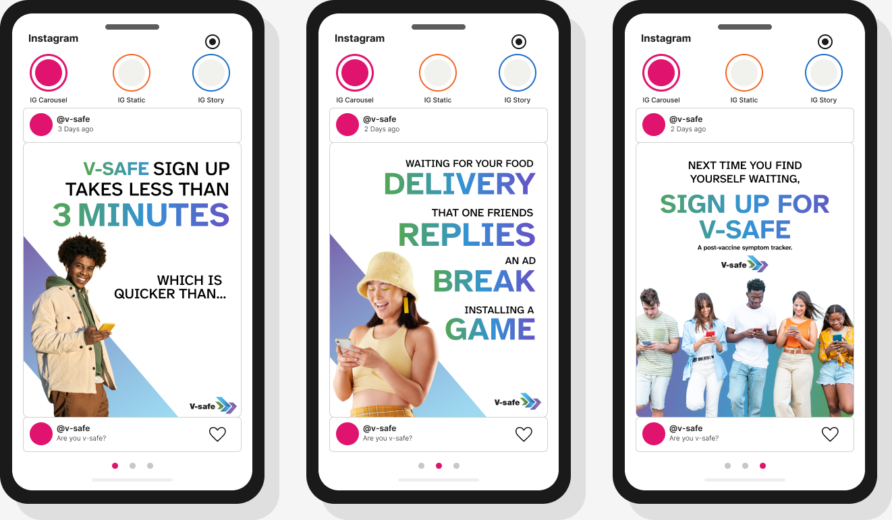
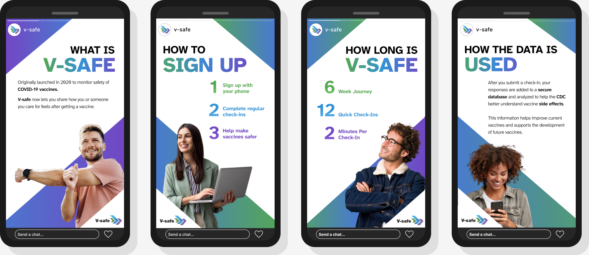
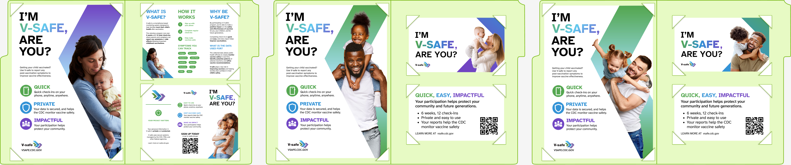
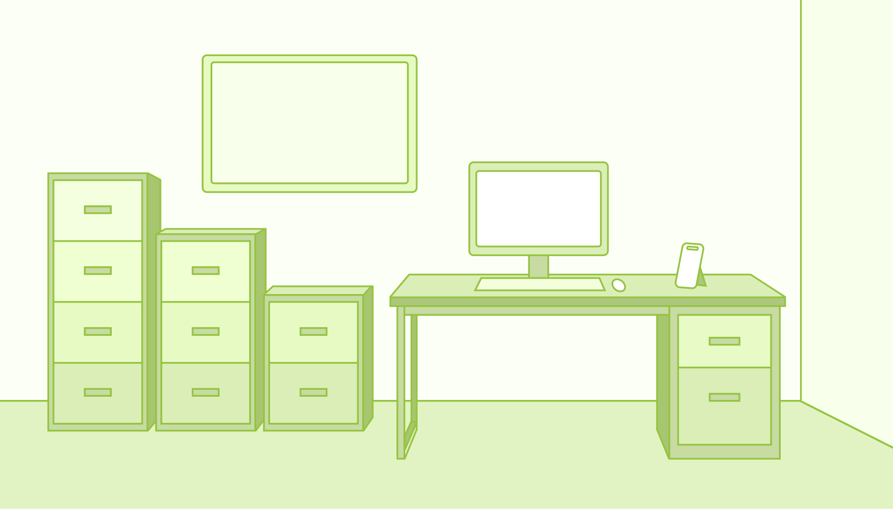

Provider offices
Pediatric care, adult primary care, urgent care, and travel clinics.
Deloitte × SCADpro / V-safe
A research-led campaign connecting everyday healthcare moments with V-safe registration and continued engagement.

01 / The brief
The team’s brief was to develop a research-based engagement approach for V-safe: attract new users, sustain participation, and extend beyond existing messaging channels.
This case presents the team’s campaign and interactive presentation artifacts. The work concerns vaccine safety communication and participation, rather than an AI diagnosis product.
02 / Research scope
The survey covered vaccination frequency, attitudes, appointment preferences, healthcare information sources, and familiarity with V-safe.
The interviews explored vaccine decision-making, trust in healthcare organizations, familiarity with the platform, and willingness to register and maintain an account.
Source: Content page, survey and interview slides (87:9–87:10). These are team research counts, not a claim that Jamie individually conducted every session. Detailed findings and individual responsibilities remain to be verified.
03 / Touchpoint strategy
Pediatric care, adult primary care, urgent care, and travel clinics.
Campaign materials for pharmacy and clinic settings.
Universities, workplaces, and retirement communities.
Location priorities are taken from the supplied deck. Staff workspaces and online presence extend the proposed campaign.
04 / Campaign in context
The visual system pairs direct headlines with green, blue, and purple accents. The carousel frames registration around familiar waiting moments; the Story sequence addresses purpose, sign-up, time commitment, and data use.
These are campaign design artifacts. Timing and service claims inside the original artwork are retained as source content, not independently verified product promises or measured project outcomes.


05 / Interactive presentation
The presentation uses an office metaphor: drawers organize research and print deliverables, a phone holds social media, and a monitor groups digital media.
This spatial structure provides a browsable alternative to a linear deck. The image below shows the original entry scene; the Figma source contains the associated navigation and screens.

06 / Reflection & evidence
The supplied artifacts establish the campaign direction and presentation system. They do not establish a measured increase in registration or long-term participation.
A next validation step would compare comprehension, registration intent, and navigation success across the proposed touchpoints. This is a proposed evaluation, not a completed study.
Selected from the user-supplied Figma file on September 11, 2026. Blank research templates and reserved Chatbot screens are omitted. This page describes team deliverables; Jamie’s precise ownership should be confirmed before treating it as an individual contribution record.